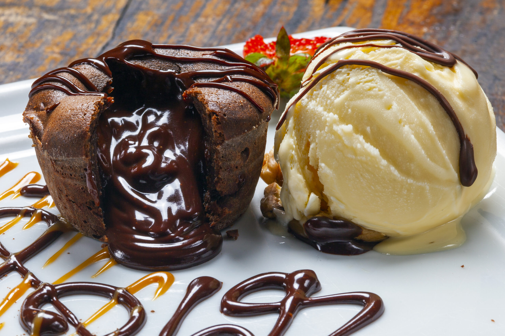

Petit Gâteau

Descrição
Petit gâteau (do francês pequeno bolo, plural: petits gâteaux; pronuncia-se peti gatô) é uma sobremesa composta de um pequeno bolo de chocolate com casca e recheio cremoso servido geralmente acompanhado de sorvete
Ingredientes
- 250 g de manteiga sem sal
- 300 g de chocolate meio amargo
- 5 gemas
- 5 ovos inteiros
- 170 g de açúcar (aproximadamente 1 xícara)
- 100 g de farinha de trigo peneirada (aproximadamente 3/4 de xícara)
- 50 g de açúcar de confeiteiro para polvilhar
- 4 forminhas redondas de 6 centímetros de diâmetro, de preferência antiaderentes
- Manteiga para untar as forminhas
- Sorvete de chocolate branco para acompanhar ao servir
Modo de Preparo
- Preaqueça o forno a 180º C.
- Unte as forminhas com manteiga, ponha-as sobre uma assadeira e reserve.
- Derreta a manteiga e o chocolate no micro-ondas.
- Bata à mão as gemas, os ovos, o açúcar e, por último, a farinha.
- Adicione o chocolate derretido à mistura e continue batendo até obter uma massa homogênea.
- Ponha a massa nas forminhas e leve ao forno por 4 minutos ou até que a superfície dos bolinhos esteja assada.
- Desenforme cada bolinho num prato e polvilhe com o açúcar de confeiteiro.
- Sirva imediatamente com sorvete de chocolate branco.